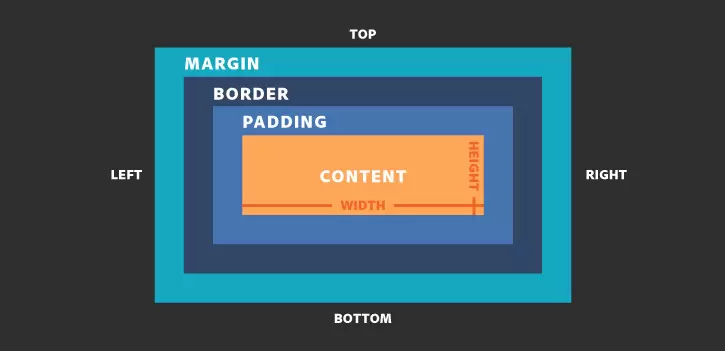

Czwarty tydzień nauki
GIT
GIT - System kontroli wersji. Program do tworzenia historii projektów. Dzięki temu w każdym momencie można prześledzić zmiany. Daje możliwość wrócenia do jakiegokolwiek poprzedniego stanu zapisanego. Pozwala pracować w grupach nad projektem
GIT != GitHub
GitHub - hostingowy serwis internetowy przeznaczony dla projektów programistycznych wykorzystujących system kontroli wersji Git.
Repozytorium - jest to projekt, czyli wszystkie pliki znajdujące się w nim.
Commit - stan projektu i opis zmiany od ostatniego zapisu.
Podstawowe polecenia w konsoli (linuks)
- git config --global user.name "Jan Nowak" - dodanie nazwy użytkownika
- git config --global user.email jannowak@example.com - dodanie adresu email
- git init - stworzenie repozytorium
- git status - sprawdzanie stanu plików
- git add - dodawanie plików do śledzenia zmian w nich
- git commit -m "opis zmian" - zapis stanu projektu
- git push - wysłanie stanu repozytorium na serwer, synchronizowanie projektu
BOX MODEL
Świat internetowych stron jest płaski, prawie cały. Można przyjąć, że świat stron internetowych jest 2(.5) wymiarowy.
Box model jest to prostokąt, w którym umieszczona jest treść (obrazek, tekst itd.). Treść ta może przybrać obojętnie jaki kształt, trójkąt, koło itd. niezależnie od tego zawsze opisana jest w prostokącie. Ten prostokąt posiada własności: content (treść), padding, border oraz margin. To wszystko tworzy nam model pudełkowy.
Właściwości CSS
- display: block - element blokowy, obejmujący całą szerokość
- display: inline - element liniowy, obejmujący samą treść
- display: inline-block - element liniowy posiadający pewne zdolności blokowe
- width - ustawia szerokość elementu
- height - ustawia wysokość elementu
- max-width/max-height - ustawiają maksymalną szerokość i wysokość elementu
- min-width/min-height - ustawiają minimalną szerokość i wysokość elementu
- margin - margines zewnętrzny
- padding - margines wewnętrzny
- border - obramowanie
- overflow - za pomocą właściwości overflow możemy określić co ma stać się z treścią niemieszczącą się w naszym pudełku
- box-sizing - służy do zmiany domyślnego modelu pudełkowego CSS, używanego do obliczania szerokości i wysokości elementów
- position - pozycjonowanie pozwala wyjąć elementy z domyślnego układu dokumentu i sprawić, że zachowują się inaczej. Na przykład można sprawić, by element był jeden na drugim lub żeby element zawsze pozostawał w tym samym miejscu wewnątrz okna przeglądarki.
- z-index - określa kolejność elementów wzdłuż osi z
- float - służy do opływania elementu przez tekst, FLOAT NIE SŁUŻY DO BUDOWANIA LAYOUTÓW
Niektóre właściwości posiadają zapis pełny oraz skrócony (shorthand).
padding-top: 5px;
padding-right: 5px;
padding-bottom: 5px;
padding-left: 5px;
padding: 5px 5px 5px 5px; - pełny zapis
padding: top right bottom left;
padding: 5px; - zapis skrócony
Jednostki
- 0 - zero to zero i nie podajemy jednostek
- px - piksele, standardowa jednostka ekranów
- % - procenty, jednostka relatywna
- vw - viewport width, to jest taki procent odwołujący się do szerokości okna
- vh - viewport height, to jest taki procent odwołujący się do wysokości okna